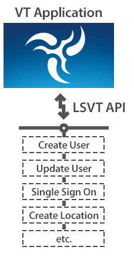
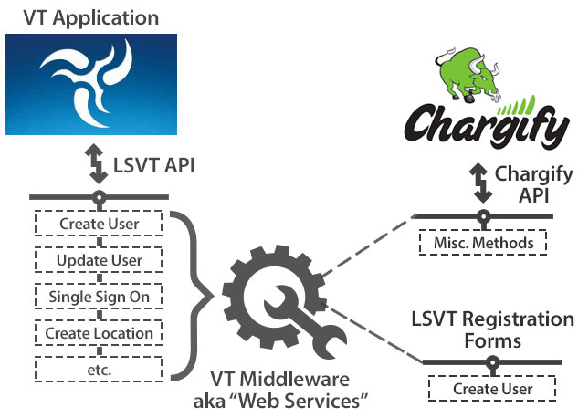

Overview
Integrating to and from LightSpeed VT.
The LightSpeed VT API provides programmatic access to your organization’s information using simple, powerful, and secure application programming interfaces (API’s). To use the API, you should have a basic familiarity with software development, Web services, and a basic understanding LSVT hierarchy.
Administrate (create and update) Locations and Users
You can do things such as administrate users in LightSpeed VT from parent applications, such as an HR system, a CRM, or even a Shopping Cart system of your choice.
Single Sign On
You can also accomplish a “Single Sign On” ability, so that users do not need two user names or even to sign in twice with the same user name.
Pull Reporting Data
It is also possible to extract course completion results for users, so that you can have reporting data in another application, or even build you own custom reports.
There are many custom things that you can do, utilizing an available API like this, and we update and add new methods to our API frequently.
Note
Before you will be able to use the LSVT API, you will need to be provided an “API Key” and a set of “Basic Data Properties” for your organization for you to get started.
Please visit our publicly available API Docs for a deep understanding of how to use and leverage the LSVT API.
http://apidocs.lightspeedvt.com
The diagram below shows a basic example of how an API works. The LSVT API acts as a liaison to the VT Application. You are able to hit these “methods” (represented in the dotted lines) and perform the noted tasks, such as; Create Users, Update Users, Create Locations, etc.

Webservices
LightSpeed VT has its own internal “middleware” component, which we call our “LSVT Webservices Control Panel” and this has some built in integration points, that use the LSVT API, and some other internal and external tools. Currently, the LSVT Client Care Team will configure anything in the Webservices Control Panel for you, but we are rapidly preparing these tools to be client facing as well.
Below are some of the “internal” and “external” tools that the Webservices Control Panel can configure.

Chargify
LightSpeed VT is already integrated with Chargify’s API’s making it a “ready to go” solution for recurring billing for your customers. LSVT can help get you set up on our “umbrella” account so that it makes the setup process even quicker.
You will be provided a credential to sign in to your Chargify account and “manage” your products and customers subscriptions.
The LSVT Client Care team will do the needed configuration to get your Chargify account talking to your VT System so that when a user makes a purchase, the appropriate privileges and account information is all set up.
Each “product family” in Chargify will have a “Checkout Page” that is built in the Webservices admin area. These can be branded and configured to your needs.
Note
We are underway making an Admin area for Super Users to use, but until then, please contact the LSVT Client Care department for assistance.
Registration Forms
A Registration Form (Reg Form for short) acts a lot like the “Checkout Page” except it does not need any billing information. It is basically a way for users to “Register” and get an account. Each Registration Form is configured to create a user at a certain Location, with predefined Access Levels and Content Roles.
Promo Codes
The Reg Form can also utilize ‘Promo Codes” where a cod is required in order to Register - we can generate codes for you. Codes can be unique and only able to be used once, or we can create you codes that can have a certain amount of uses, or infinite.
Email Notifications
The Webservices Control Panel can configure email notifications to go to users based on the following events:
- Course Completion - when a user completes a course, the email gets triggered to go out in real time.
- Chapter Completion when a user completes a chapter, the email gets triggered to go out in real time.
- Number of days with no sign in
- Number of days after “Sign Up” (Start date)
- Number of days prior to account expiration
To set these up, the information we will need from you is:
- The IDs of the Courses/Chapters desired, or the “number” of days (whichever is applicable)
- Email from “Name” and “Email Address”
- Email subject line
- Email body text
And here is the dynamic data that is available to use in the body text:
%%courseid%%
%%coursename%%
%%datetimecompleted%%
%%email%%
%%firstname%%
%%lastname%%
%%locationid%%
%%locationname%%
%%phone1%%
%%phone2%%
%%userid%%
%%username%%
Unlock Content - Event Trigger
The Webservices Control Panel can be configured to change a user's Content Role(s) based on Course or Chapter completions. This is handy because you can use it to unlock content after a user completes some sort of prerequisite. You can also “reset” their “Welcome Message Video” if desired on this trigger too.